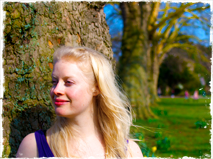

{DayOfMonthWithZero} {MonthNumber} / {Year}
September 1st: A transformative retreat in the beautiful Medieval village of Lézan, focusing on your individual yoga practice. The 7-day retreat is designed to give deeper bodily awareness and to find joy in the movement of the body. The retreat includes daily yoga classes, guided walks in stunning scenery, and evenings of music and dance - all set in the surroundings of rural France.
Throughout the 7 days Laura will guide you through a personalised development of your own yoga practice, helping you to find healing and well being through Forrest Yoga and breathing. The retreat is designed to suit all levels and is adjusted to work with and heal injuries. Enjoy your holiday by participating in dance workshops, drumming, music, and local guided walks to ensure that week is filled with activities that delight the Spirit.
Our retreat is relaxed and friendly to ensure that each person receives the attention and guidance they need to move forward in strength and beauty. We will serve delicious homemade food three times a day, all made with locally sourced ingredients. Spend evenings unwinding in led meditation and chanting sessions, playing music, or relaxing with friends in a beautiful setting.

Laura's teaching is designed to give students a deeper bodily awareness and to find joy in the movement of the body. Her classes are built around the need to protect and nurture the physical body in order to enhance spiritual and emotional well-being.
 In 2010 Laura trained under the guidance of Elena Voyce in London to become a Hatha teacher certified by The The British Wheel of Yoga and Yoga Alliance. This experience gave a new strength to Laura's practice through Elena's vigorous training, paying particular attention to the power of soft core and opening the body through connecting to the foundation.
In 2010 Laura trained under the guidance of Elena Voyce in London to become a Hatha teacher certified by The The British Wheel of Yoga and Yoga Alliance. This experience gave a new strength to Laura's practice through Elena's vigorous training, paying particular attention to the power of soft core and opening the body through connecting to the foundation.
In July 2012 Laura completed the transformative Forrest Yoga Foundation Teacher Training with Ana Forrest to become an associate Forrest Teacher. She is very excited to now pursue the Forrest Teacher Mentorship Programme to deepen her knowledge and love of Forrest yoga. Laura emphasises modifying individuals yoga practices to work with and heal injuries and to deliver classes that are more suitable to modern day Western body and minds.
Laura has a strong connection in dance and movement, working in different disciplines such as Blues dance, Lindy Hop, Folk dancing as well as her yoga practice. She has a deep understanding of how energy flows from being a dancer and yogi since her early teenage years.
After working as an art teacher, Laura chose to follow her passion and become a full time yoga teacher. Laura is a Fine Art graduate of The Glasgow School of Art and achieved her qualification as a teacher from The University of Cambridge.

Our retreat is small and friendly enough to ensure that each person receives individual attention and guidance. The hosts are friendly and relaxed and ready to tailor the retreat to suit your needs.
We will serve delicious home made food three times a day, all made with locally sourced ingredients. Spend your evenings unwinding in led meditation and chanting sessions, playing music, dancing or relaxing.
Prices are:
- £750 (to share a twin room)
- £850 (for a single occupancy room)
A £150 non-refundable deposit is required to secure your place. Prices include:
- Two daily yoga sessions
- Three delicious meals a day
- Unlimited fruit, water and herbal teas throughout the day
- Meditation and relaxation sessions
- Seven nights accommadation + all linen and towels
- Guided walks to local natural areas of interest
- Assitance and advice in arranging optional extra excursions
The retreat runs from Saturday 1st September to Satuday 8th September 2012. There will be a gentle yoga session available on the day of arrival, followed by dinner. Days are then scheduled around the following timetable.
| 7:30am | Light breakfast available |
| 9:15am - 10:45am | Hatha Yoga Session |
| 10:45am - 11:15am | Meditation and relaxation |
| 12:30pm | Lunch |
| 1:30pm - 4:30pm | Free time. Optional walking, music and dance workshops. |
| 4:30pm - 6:00pm | Hatha yoga session |
| 6:00pm - 7:00pm | Meditation, relaxation and reflection on the days practice |
| 7:00pm - 8:00pm | Dinner |
| 8:00pm | Free time and evening entertainment |
The village of Lézan, located near the Gardon of Anduze in the Cevennes Piedmont, is a small and friendly place tucked away in South France.
The nearest airports are Montpellier or Nimes. The Eurostar is also available to Nimes. Shared pick-ups from the airport may be arranged at certain times during the day.
“The historical centre has preserved its medieval charm. The lanes are narrow and winding. The buildings have balconies, terraces and interior courtyards typical of a Mediterranean landscape. The castle, the ramparts, the doors, the wells, the clock tower, the protestant temple (dating from the 12th and 13th centuries), the church and the famous "Lézan Bridge" are all emblematic buildings, remnants of the long and rich history of Lézan. They will always be of interest to locals, walkers, tourists and scholars alike, who cannot fail to be charmed by this lovely place.”
The Anduze Tourist Office.
Please get in touch directly for more information or to book your place.

| In person | Laura teaches regular classes at the Equilibrium Yoga Centre in Peterborough. |
| By e-mail | laura@southfranceyogaretreat.com |
| By phone | Call Laura on +44 7788 864945 (please leave a message if unavailable!) |